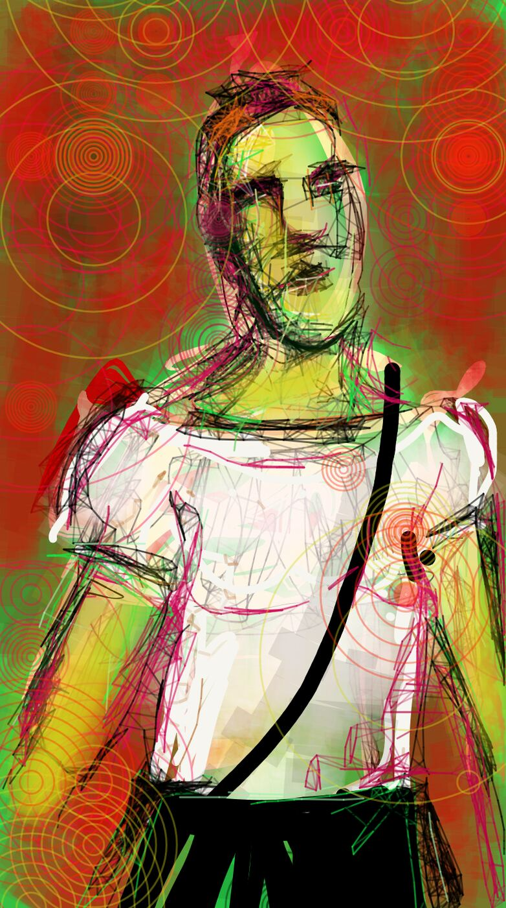
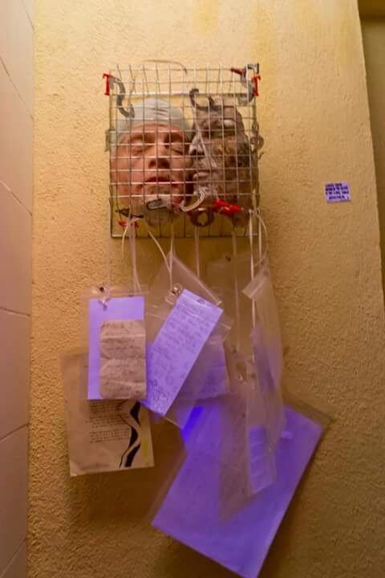

Peter
Dibujo digital
Caja de luz
El instante
produce
el acontecimiento
Pintura, dibujo y escultura. Una exploración constante de la memoria, la identidad y los vínculos humanos.
VER OBRABarcelona

Pintura
dibujo
escultura
Mirás



El taller
como territorio
Miras al otro lado: un lugar de investigación, prueba y descubrimiento, donde la materia cobra forma. Exposiciones y talleres de pintura, dibujo y escultura.
VER PROCESO
«Ocaña en tránsito»: talla directa sobre grafito de alta densidad, bruñida en bronce. 320 cm y 600 kg.
VER ESCULTURAMateria
cuerpo
tiempo


El arte también es movimiento
Espacios, objetos e ideas que dialogan con el entorno. Collages interactivos, ensamblajes y acciones en directo.
VER PROYECTOSEl espacio
también cuenta

«La obra de David Mirás es muy instintiva: son interpretaciones de sus mundos, reflejos de muchos instantes vividos, imaginados e incluso robados con solo mirar.»
Tom Puey, coleccionista e historiador
CONOCER MÁS